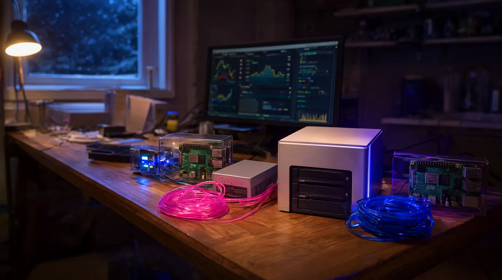
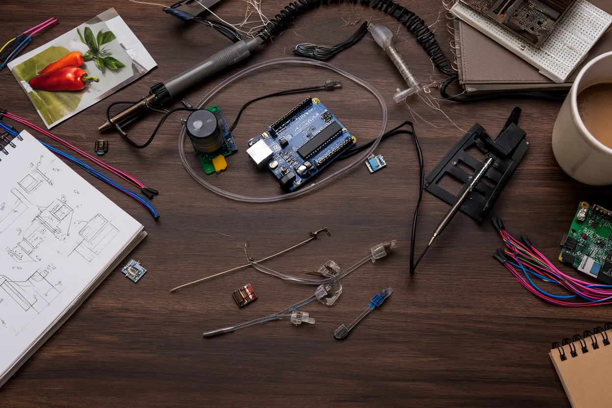
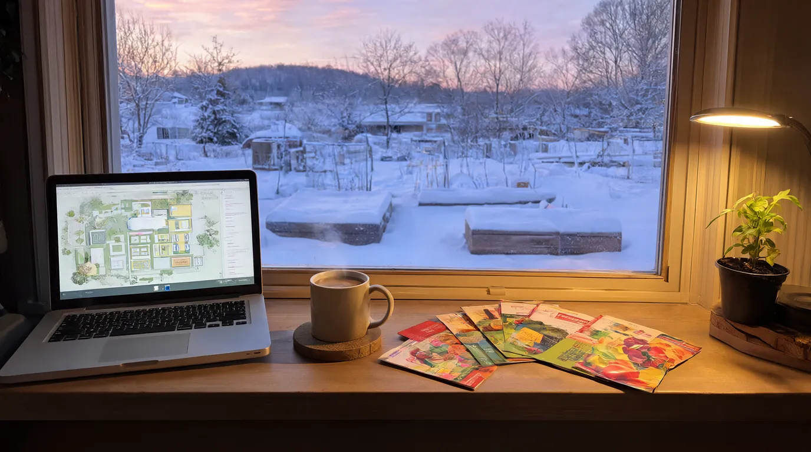
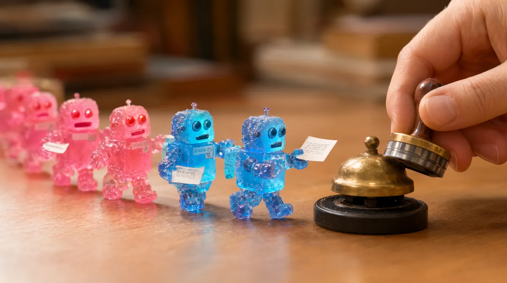

13 yrs
Carrier networking
Network Engineer 3 at Charter Communications / Spectrum Enterprise, 2013–2026. MPLS, IS-IS, BGP and carrier Ethernet on Juniper, Cisco and Nokia.
Open to work · Milton, Wisconsin
I spent thirteen years keeping a carrier network running. Now I build the AI tools that take over the repetitive work, and the guardrails that keep them honest.
The narrator, soundtrack and art on this page were generated on my own Mac Studio. How →
00 · The 20-second version
13 yrs
Network Engineer 3 at Charter Communications / Spectrum Enterprise, 2013–2026. MPLS, IS-IS, BGP and carrier Ethernet on Juniper, Cisco and Nokia.
2020
Python and Paramiko against thousands of routers. The last two years on the DevOps team, shipping tools for engineers through GitLab CI/CD.
Daily
Claude Code every day, local LLMs on a Mac Studio, agents that ask before they act, RAG with real evals. Ten self-hosted apps my family actually uses.
Next
AI and automation, DevOps or NetDevOps work on a small team. Madison to Milwaukee, hybrid preferred.
What I believe
AI can do most of the work now. The hard part is harnessing it: pointing it at real problems, checking its work, and reining it in when it's wrong. That's the part I'm good at.
01 · The route here
Thirteen years at one company, one network, and a habit of automating anything I had to do twice.
Northcentral Technical College, Network Specialist. My first program ever was an Alice animation called T-Rex vs. Bunny (Fall 2010; the file is still on my NAS). Then Packet Tracer labs, Active Directory, InfoSec, project management, and a lot of cable.
Hired straight out of school onto the fiber enterprise team. Point-to-point circuits, cell backhaul out to carrier MTSOs, off-net Type 2s, and big multipoint E-LANs for customers like a Fortune 500 insurer and a regional grocery chain. Every turn-up tested with EXFO (RFC 2544, Y.1731).
1,000–2,000 circuits in a good year. My share, not the team's.
Before I knew how to code properly, I built a spreadsheet that drove our CRM through the browser: circuit IDs, IP and VLAN assignment, device allocation, even the Visio diagram. An order that took over an hour took about five minutes. A thirty-person team ended up using it, and management mostly wanted to know why I was suddenly so fast.
Charter bought Time Warner Cable and our all-Cisco region went multi-vendor overnight. I led the move to Juniper, wrote the internet, voice and WAN standards in Confluence, and built a JavaScript config generator for MX960 and MX480 routers. We were one of two teams, out of about seven, that got off stale spreadsheets. Passed CCNP SWITCH along the way (835, needed 790).
New router standards were landing a few times a week. I did them by hand until I couldn't stand it, then taught myself Python: weekly audits and fixes across the region's Cisco ASR 9000s, Juniper MXs and Nokia 7750s. When the regional QoS policy had to be rewritten on every PE router, I automated it solo. Other regions put five or six engineers on the same job.
I got pulled onto the DevOps team building apps for the network engineering org. On our password-rotation platform (thousands of core routers, hundreds of thousands of customer devices) I wrote the multi-vendor modules: the home-grown Paramiko code that knows how to drive each vendor's CLI. Secrets lived in HashiCorp Vault; GitLab CI/CD promoted releases from candidate to live across three regional servers.
When I moved over, my old regional work was split across six engineers: three seniors, two NE4s and a principal.
In January 2025 I started vibe-coding a garden planner just to learn the AI tools. By spring 2026 I'd bought a Mac Studio to run models locally and was spending half my day in Claude Code. Charter closed my office in June 2026, and I've been building ever since. Everything below this line came out of that.
That's the part where you come in. Send a packet →
02 · By the numbers
2,000
circuits built in a peak year, by me
5min
per circuit order after my VB builder (down from 60+)
100k+
devices my vendor modules logged in to
1
engineer on the region-wide QoS rollout. Other regions used 5–6
6
engineers to cover my region when I moved to DevOps
10
self-hosted apps across five machines at home, all built with AI

03 · What I build now
A Mac Studio, two Raspberry Pis, a media server and a NAS. Every tool here solved a real problem in my house, and my family uses them daily. They're the toughest QA team I've ever had.
A · The Hub
Flaskgevent + WebSocketsOllamaComfyUIMLXClaude Code
B · The house platform
PythonSQLitenginxSonos / UPnPESPHomePiper TTSOpenAPI
C · Fleet ops
SNMPParamikonftablesTailscaleLet's EncryptForgejo
D · Dairy Audit Assistant
RAGEmbeddingsEvalsOllamaSVG mapping
E · GrowYear
ReactTypeScriptViteSupabase / Postgres
LLM-written radio sets with their own voices and personalities. Lord Pemberton hosts the classical station, and he introduces this site's theme song below.
One shared voice service for every app. Each app decides what to say; the service owns the voice, volume, speakers and the “already said that” ledger.
A voice agent interviewed me over a week of calls, 96 questions in all. It keeps the profile this site was written from and tailors a résumé for each posting.
We heat with LP. EIA data says locking an October price beat floating in 25 of 29 winters, and dealer margins have tripled since 1992. Shop dealers before you time the market.
Reclaimed 3 TB, and found a year of family photos that existed only in the backup. I hash-verified everything: matching by name and size would have deleted 160 GB of real data.
A game-night toolkit: live dice, a Discord soundboard bot, and an AI-hosted radio station for each campaign.
Tickets for AI agents with claim-or-409 semantics, so two agents never grab the same job. Delete means archive; nothing is erased.
Strategy research with hard guardrails: paper money only, stops held at the broker, and no new entries when the market's on fire.
04 · Before AI

Everything in this strip is real. I pulled it off my NAS: notes, code and configs from projects I built by hand.
2010
First program ever. Alice, Intro to Programming, Fall 2010. Followed shortly by OceanWorld and a hotel-booking program with extra credit.
Trex vs bunny.a2w
2017
GNS3 and IOU labs on a home PC, the official cert guides, and a lot of nights. Passed SWITCH with an 835 (790 to pass).
CCNP Pass 001.jpg
2019
A reed switch on a Raspberry Pi GPIO pin, a web button to open the door, and a cron job that shuts it if somebody leaves it open.
garagedoorcheck.py
2019
A web page that drives an HDMI switch over RS-232 through a USB-serial adapter. No more hunting for the remote.
port0R.php … poweroffR.php
2019 → 2020
Arduino, three soil sensors, three pumps and status LEDs. Even v1 had guardrails:
int PumpFrequencyLimiter = 14400; //TIME PERIOD FOR
// EACH WATERING 14400 = 4 hours // PUMP WILL ONLY
// RUN ONCE PER TIME PERIOD
int PumpCutOffTime = 15;Plant Waterer v1.txt
2020
The “Pepperpi”: a Raspberry Pi with a BME680 and soil sensors through an ADS1015, charted live with Chart.js. Plus a “Pepperduino”, an Arduino and ESP8266 for the far end of the garden.
soil_logging.py
2020
Recording and archiving IP camera streams on a Raspberry Pi, with scripts to convert and rotate the footage.
recordCAM.sh
2022
MicroPython on ESP32s, with relays switched over MQTT. The same idea as today's smart plugs, from scratch.
Turn Relay on-off.txt
2023
My first AI app: a Python API on OpenAI that only talks food, answers in strict JSON (recipe, time, ingredients, allergens) and runs in Docker behind nginx.
backend/app/main.py
2023
A Kali live USB plus EVE-NG with IOS-XRv and vIOS labs, and Python traffic generators for MTU and MAC-table testing.
Network_Testing/README.txt
2024
Got my GMRS license and flashed custom firmware onto cheap handhelds with CHIRP. Because of course I did.
FCC GMRS License.pdf
2025
Same habit, new tools. It used to be my typing speed. Now it's how clearly I can describe the problem.
05 · Why I build
A gardener who starts young gets maybe sixty gardens in a lifetime. Not even a hundred. I think about that a lot, about time and what's worth spending it on.
Winter in southern Wisconsin is long. Every January I plan the next garden like it's the first one, even though by August it's a jungle and I regret everything.
That's why I build tools: so the computers get more of the chores, and my family gets more of me.
0 / 60 gardens

06 · This page is also a demo
Every image, sound and voice on this site came out of the studios I built into the Hub, running on a Mac Studio in Milton, Wisconsin. The words came from me, a voice agent that interviewed me, and Claude Code.
Theme song
Written for this site and generated with ACE-Step 1.5 XL, then mastered to −14 LUFS. It's introduced by Lord Pemberton, one of my AI radio DJs, who doesn't approve.
Lord Pemberton, then the song
[verse] Thirteen years of fiber light, Madison to the MTSO Turning up a thousand circuits, watching every little light glow I did it all by hand until my hands said no more So I wrote myself a script and walked on out the door [chorus] Okay, cool, let the robots carry the load Okay, cool, I'll be the one who writes the code Pink and blue in the wire tonight Every packet's finding its way home Okay, cool, okay, cool [verse] Got a Mac Studio humming in a Milton basement room Little Pis up on the shelf and the peppers all in bloom The agents ask permission and I tell 'em yes or no You can hand it all to AI, but somebody's got to know [bridge] Make the failures loud, make it right Write it down for somebody Then go home for the night
Narrator
Kokoro, an 82M-parameter voice model, running on Apple's MLX. Turn it on and each chapter is read aloud as you reach it, with captions. The soundtrack ducks under the voice automatically.
Soundtrack
An instrumental ambient bed made with ACE-Step 1.5 and looped seamlessly. It's off until you ask for it. Use the Sound button up top.

07 · How I work
01
I'm detail-oriented, but I can't do the same task every day. So I don't. I learn it by hand, then I automate it. I did that for three years before I knew how to code, and it's been all systems go since.
02
A new device, a new process, the thing everybody's scared to touch: that's where I want to be. If you need a trailblazer, I'm your guy.
03
When it's on fire, I fix it now. Then I come back and fix it right, and write down what happened.
04
Silent failures are the worst kind. Everything I run has a health check and an alarm, and a warning beats a quiet fallback every time.
05
Let AI write freely where it's reversible, and make it ask before it acts. That gets you speed where it's safe and a gate where it isn't.
06
I document because I forget things, and writing for an audience forces me to do it well. At Charter I was the team's Confluence guy.
07
I do my best work on a small team, with one-on-ones over group calls and a hands-off manager who notices good work. A “nice job” goes a long way with me.
08 · Toolbox
Claude Code, dailyAgent orchestration with approval gatesOllama & local LLMsRAG + evalsStructured JSON outputComfyUI (image, music, video)TTS: Kokoro, Piper, ChatterboxMLX
PythonParamikoFlask & FastAPIJavaScript / TypeScriptReact + ViteSQLite, Postgres, SupabaseREST + OpenAPIGitLab CI/CDGitHashiCorp VaultLinux, nginx, systemdDocker (basics)Visual Basic (the old days)
Juniper MXCisco ASR 9000Nokia 7750 SRMPLSIS-ISBGPL2VPN / VPLS / LDPQoSBFDTACACS+SNMPCarrier EthernetEXFO RFC 2544 / Y.1731TailscaleOPNsensenftablesCloudflare
Raspberry PiArduinoESP32 / ESP8266MicroPythonMQTTESPHomeSonos / UPnP
Certs: Nokia NRS I (active) · Cisco CCNP R&S and Juniper JNCIA (lapsed). School: Northcentral Technical College, Network Specialist, 2011.